-
VIDEOS
-
ENLACES
-
REVISTAS CIENTÍFICAS
- Ondas Gravitacionales
- Relatividad General
- Astrofísica
Rai Weiss: The future of gravitational wave astronomy
Presentado por Dr. Rainer Weiss, ganador del Premio Nobel en Física. Página oficial


Advanced Topics in General Relativity-Black Holes, Gravitational Waves and Very Early Universe
By Dr. Abhay Ashtekar at the Institute for Gravitation and the Cosmos, Penn State University Página oficial

Astrofísica UC
Presentado por el Canal oficial del Instituto de Astrofísica de la Pontificia Universidad Católica de Chile. Videos de Youtube

- Niños
- Adultos
- Oportunidades
- Simuladores
Recursos Científicos y Educativos Infantiles
-

Espacio de los niños
Portal educativo con actividades espaciales para niños y jóvenes.
-
Revista Infantil Hélix
Portal educativo y de revistas para niños y jóvenes.
-
NASA Ciencia: Space Place
Portal educativo con actividades espaciales para niños y jóvenes.
Recursos Científicos en General
-
Hacia el Espacio
Revista divulgativa de ciencia y tecnología de la Agencia Espacial Mexicana.
-
CONACYT Prensa
Artículos publicados por CONACYT.
Convocatorias y Oportunidades
-
Hacia el Espacio
Convocatorias ofertadas por parte de la Agencia Espacial Mexicana.
Simulaciones y Experimentos
-
Hacia el Espacio
Convocatorias ofertadas por parte de la Agencia Espacial Mexicana.